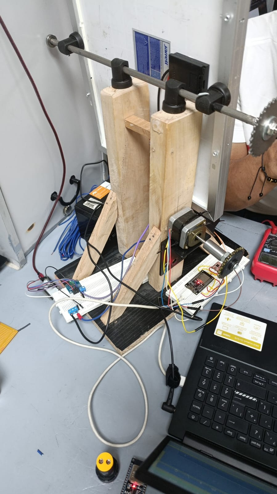
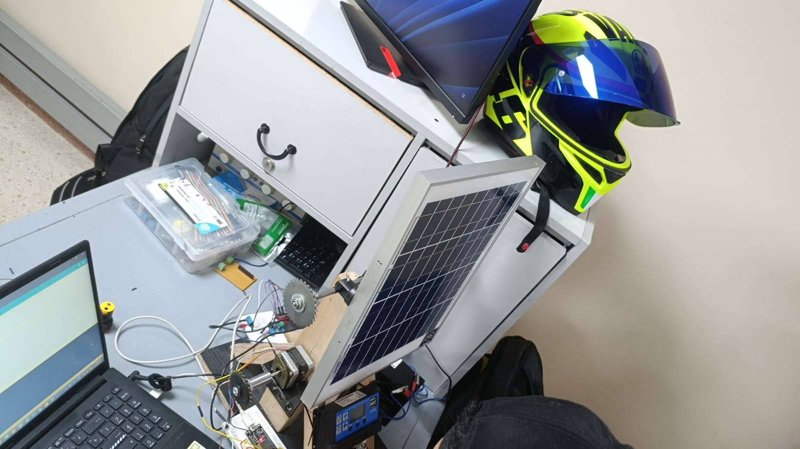

Sistema Agrivoltaico: monitoreo IoT híbrido, seguimiento solar de un eje y almacenamiento de energía.
El proyecto busca desarrollar un sistema agrivoltaico para optimizar la captación de energía solar en entornos de invernadero, integrando automatización industrial, seguimiento solar e Internet de las Cosas.
La propuesta responde a dos necesidades principales: mejorar el rendimiento de paneles fotovoltaicos estáticos y mantener un registro continuo y confiable de la energía generada, almacenada y consumida.
El ESP32 fue seleccionado como microcontrolador principal por integrar procesamiento de doble núcleo, entradas analógicas y digitales, comunicación WiFi, Bluetooth y ESP-NOW.
Esta capacidad permite separar las tareas de conectividad de la lectura de sensores y del control del seguidor solar.
El INA219 permite medir el voltaje de bus y la corriente mediante un ADC interno de 12 bits y comunicación digital I²C. Su uso reduce la sensibilidad al ruido electromagnético producido por la etapa de potencia.
El sistema contempla baterías de ciclo profundo y una gestión de carga que deberá proteger contra sobrecargas y descargas profundas.
La actuación mecánica se encuentra en fase de diseño. Se estudia el uso de un motor paso a paso NEMA 17, así como alternativas con servomotor de alto torque, motor DC con caja reductora o neumática.
La etapa de potencia deberá permanecer aislada del circuito de medición para evitar que el ruido y los picos de retorno afecten al ESP32 y al INA219.


La comunicación se divide en un modo normal y un modo de contingencia. Así, la pérdida de WiFi o de Internet no implica automáticamente la pérdida de las mediciones del sistema.
ESP32 conectado por WiFi al punto de acceso y envío de telemetría mediante MQTT sobre TCP/IP hacia el broker.
ESP-NOW permite comunicación directa entre nodos sin DHCP ni asociación a un router, con baja latencia y bajo consumo.
La tarjeta MicroSD almacena registros CSV o JSON con marca de tiempo para sincronizarlos después de recuperar la red.
MQTT fue elegido por su modelo publicador/suscriptor, su bajo sobrecosto de cabecera, sus niveles de calidad de servicio y el mecanismo Last Will and Testament para detectar desconexiones inesperadas.
| Criterio | MQTT | HTTP/REST |
|---|---|---|
| Arquitectura | Publicador/suscriptor y orientada a eventos. | Cliente/servidor y request/response. |
| Eficiencia | Cabecera mínima y optimizada para redes inestables. | Mayor sobrecosto por encabezados repetidos. |
| Tolerancia a fallos | QoS y Last Will and Testament. | Requiere reintentos y heartbeats adicionales. |
La arquitectura propuesta prioriza la soberanía de los datos, la retención histórica y la posibilidad de escalar sin depender de un proveedor único.
Autenticación por usuario y contraseña, además de cifrado TLS en MQTT.
InfluxDB utiliza mecanismos de persistencia y registro para reducir la corrupción de datos.
Políticas de retención y reducción de resolución para controlar el crecimiento de la base de datos.
La visualización se desacopla del microcontrolador; el ESP32 solo transmite datos estructurados.
| Fase | Actividades principales | Entregable |
|---|---|---|
| 1. Investigación y diseño | Selección de plataforma IoT, protocolo MQTT, circuito de carga, INA219 y mecanismo solar. | Plataformas validadas y esquemático base. |
| 2. Simulación y programación | Simulación de potencia y firmware ESP32 para LDR, INA219 y control. | Firmware base probado y reconfigurado. |
| 3. Implementación IoT | Montaje del prototipo, integración de baterías y red híbrida con SD y MQTT. | Captura local y remota de datos. |
| 4. Integración y validación | Pruebas de seguimiento, carga, telemetría y desconexión forzada de red. | Prototipo funcional y documento técnico avanzado. |
El quinto semestre establece una base técnica para un sistema agrivoltaico automatizado, escalable y tolerante a fallos. La solución integra seguimiento solar, almacenamiento energético y comunicación IoT local y en la nube.
Las tecnologías y componentes permanecen sujetos a validación y posibles cambios conforme avance la investigación y las pruebas del prototipo.
Consulta los documentos de referencia utilizados para estructurar la arquitectura, la metodología y los objetivos del quinto semestre.
📕 Ver sistema híbrido de monitoreo 📕 Ver informe técnicoExplora los avances de los semestres anteriores y la evolución del sistema agrivoltaico.
⬅ Volver a Semestres